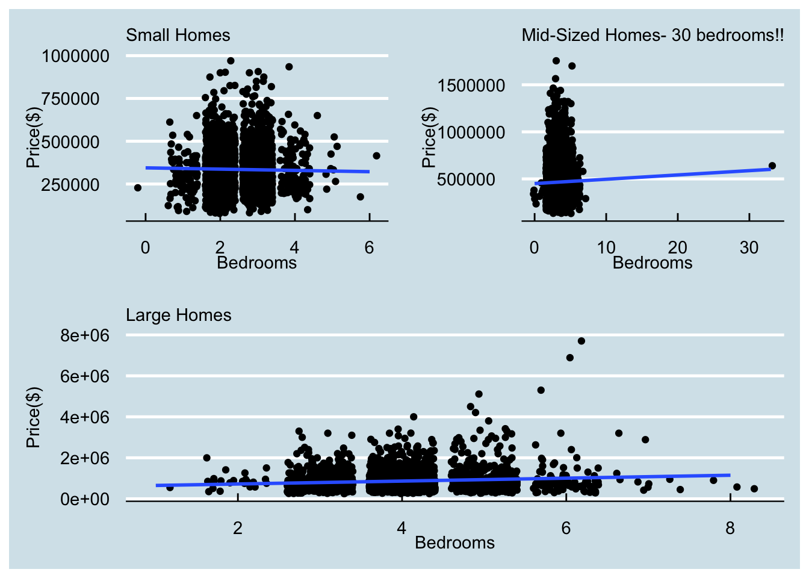

4 Multiple Regression
4.1 Working with Categorical Data
Now let’s add a categorical variable into the model. For example, we can ask whether the job sector (industrial vs. information technology) has an impact on wages. In particular, we may hypothesize that persons working in the IT sector may, on average , make more money. Let’s see whether this is true or not.
wage_data %>%
group_by(jobclass) %>%
summarise(n(), mean(wage))## # A tibble: 2 × 3
## jobclass `n()` `mean(wage)`
## <chr> <int> <dbl>
## 1 1. Industrial 1544 103.
## 2 2. Information 1456 121.wage_data %>%
ggplot() +
aes(x = wage, col = jobclass) +
geom_density() +
theme_economist() 
# Note:
# 1. Plot style in the Economist magazine
# 2. You can try theme_wsj for the style of Wall Street Journal and many more using the 'ggthemes' package.wage_data %>%
select(wage, jobclass) %>%
tbl_summary(by = jobclass,
statistic = list(wage ~ '{mean}')) %>%
add_p(test = list(wage ~ 't.test'))| Characteristic | 1. Industrial, N = 1,5441 | 2. Information, N = 1,4561 | p-value2 |
|---|---|---|---|
| wage | 103 | 121 | <0.001 |
| 1 Mean | |||
| 2 Welch Two Sample t-test | |||
wage_data %>%
t.test(wage ~ jobclass, data = .) ##
## Welch Two Sample t-test
##
## data: wage by jobclass
## t = -11.489, df = 2714.9, p-value < 2.2e-16
## alternative hypothesis: true difference in means between group 1. Industrial and group 2. Information is not equal to 0
## 95 percent confidence interval:
## -20.21940 -14.32378
## sample estimates:
## mean in group 1. Industrial mean in group 2. Information
## 103.3211 120.5927It seems like there is a difference between the two sectors as expected. Does it hold once we adjust for age? For example, could it be that most of the younger workers are in the IT sector and the older workers are in the industrial sector?
wage_data %>%
ggplot() +
aes(x = age, col = jobclass) +
geom_density() +
theme_economist()
wage_data %>%
ggplot() +
aes(x = age, y = jobclass) +
geom_boxplot() +
theme_economist()Contrary to what we thought, the shift is in the opposite direction where the mean (and median) age of industrial sector workers is less compared to the IT sector. Now the question is whether the salary difference in the two sectors can be attributed to age or job sector or both.
We can use the regression framework to explore this.
wage_data %>%
sample_n(size = 500) %>%
ggplot() +
aes( x = age, y = wage, col = jobclass) +
geom_point() +
geom_smooth(method = 'lm',
se = FALSE)## `geom_smooth()` using formula = 'y ~ x'
The following model will help us determine whether there is a difference in salary due to job secotor after we adjust for the age of the person.
model1 <- lm(wage ~ age + jobclass, data = wage_data)
tbl_regression(model1)| Characteristic | Beta | 95% CI1 | p-value |
|---|---|---|---|
| age | 0.64 | 0.52, 0.77 | <0.001 |
| jobclass | |||
| 1. Industrial | — | — | |
| 2. Information | 16 | 13, 19 | <0.001 |
| 1 CI = Confidence Interval | |||
stargazer(model1, type = 'html')| Dependent variable: | |
| wage | |
| age | 0.645*** |
| (0.064) | |
| jobclass2. Information | 15.921*** |
| (1.473) | |
| Constant | 76.630*** |
| (2.832) | |
| Observations | 3,000 |
| R2 | 0.074 |
| Adjusted R2 | 0.074 |
| Residual Std. Error | 40.161 (df = 2997) |
| F Statistic | 120.363*** (df = 2; 2997) |
| Note: | p<0.1; p<0.05; p<0.01 |
model1 %>% tidy() %>% kable(digits = 2)| term | estimate | std.error | statistic | p.value |
|---|---|---|---|---|
| (Intercept) | 76.63 | 2.83 | 27.06 | 0 |
| age | 0.64 | 0.06 | 10.11 | 0 |
| jobclass2. Information | 15.92 | 1.47 | 10.81 | 0 |